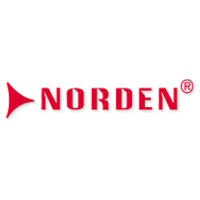
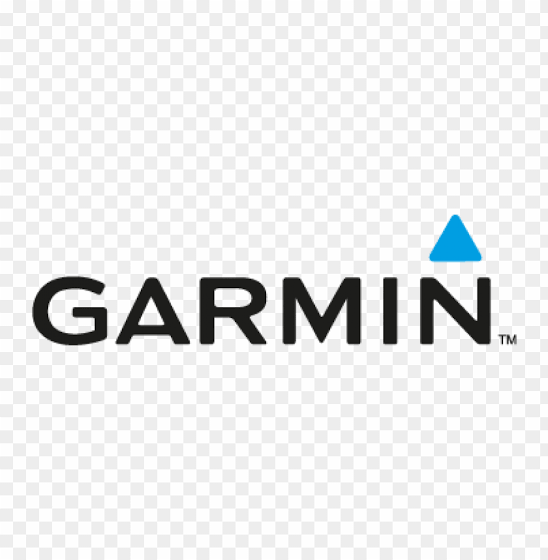
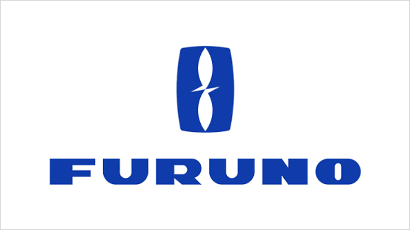

Mission
To supply high quality products to Bangladesh defence forces through verified global partners, responsive communication and disciplined delivery management.
Years of Experience
in Marine & Defence Supply
Products Supplied
Across Bangladesh
Satisfied Clients
Trusted by Professionals
Technical Support
Always Available
SJ Trade International supports Bangladesh defence forces with organized sourcing, compliant supply and dependable after-sales coordination for maritime, air and land technology requirements.
To supply high quality products to Bangladesh defence forces through verified global partners, responsive communication and disciplined delivery management.
To become a trusted Bangladesh Navy equipment supply partner for advanced marine tech, security systems and operational infrastructure.
Maritime communication, bridge operation, surveillance, power protection, medical equipment, emergency systems and tactical support accessories.
Select a product to view focused details. Each category is chosen for operational reliability, defence readiness and long-term support.

Norden Communication Hanshin Electronics
Garmin
FurunoHelpful guidance for organizations evaluating reliable marine technology, security systems and mission-critical equipment sourcing in Bangladesh.
Bangladesh is a maritime nation with strategic rivers, busy sea routes, coastal installations, naval facilities, ports, shipyards and offshore operating zones. For these environments, marine technology is not a luxury purchase; it is part of operational readiness. A vessel, base or secure facility depends on communication, navigation, surveillance, emergency alerting and power protection systems working together at the right moment. That is why defence equipment Bangladesh buyers usually look beyond the lowest price and focus on dependable sourcing, proven brands, technical matching and after-sales coordination.
A professional Bangladesh Navy equipment supply approach starts with understanding the mission. A patrol craft may need marine-grade HF antenna systems, GPS navigation, bridge operation support, PA systems and rugged radio communication sets. A shore facility may need high quality security system supply with CCTV cameras, access control, fire alarm equipment, UPS backup and diesel generator support. A medical or logistics unit may need specialized equipment such as MRI systems or power infrastructure for sensitive devices. Each requirement has a different technical environment, but the buying discipline is similar: confirm the use case, select equipment that can tolerate field conditions, and ensure the solution can be maintained.
Communication equipment is one of the most important categories for defence and marine operations. Radio communication sets, walkie talkies, ship PA systems and antennas help teams coordinate movement, safety announcements, maintenance activity and emergency response. In maritime environments, moisture, vibration, salt air and electrical noise can reduce equipment life when products are not properly selected. Marine-grade accessories, suitable mounting, correct antenna planning and clear user training make the difference between equipment that simply arrives and equipment that performs.
Navigation and bridge operation technology also matter for safety and command confidence. GPS devices, chartplotters and compatible bridge equipment give vessel teams better awareness during movement, patrol, inspection or rescue support. Trusted global brands such as Garmin, Furuno and Codan are often considered because marine users value stable performance, recognizable interfaces and practical serviceability. When combined with reliable communication and power backup, navigation equipment becomes part of a wider operational system instead of a standalone device.
Security is another growing priority. Modern ports, bases, warehouses and vessel berths require advanced CCTV camera systems, PTZ monitoring, fire alarm coverage and control room visibility. Norden-style surveillance, PA, fire alarm and power solutions show how integrated infrastructure can support safer facilities. A high quality security system supply partner should help match camera type, recording capacity, monitoring layout, network requirements and backup power to the site, rather than offering a generic package.
SJ Trade International works as a trading house for defence purchase with a focus on organized sourcing for maritime, air and land requirements. The goal is to help clients receive dependable equipment, relevant product advice and responsive quotation support. For buyers looking for marine tech in Bangladesh, Bangladesh Navy equipment supply, defence equipment Bangladesh sourcing or critical security system supply, the strongest result comes from combining global product access with local understanding of operational needs.
Send your requirement for CCTV, radio communication, GPS, PA system, fire alarm, UPS, diesel generator, medical equipment or marine speed boat sourcing.